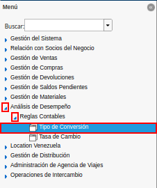

6.1.3. Conversión Automática por Tipo de Conversión¶
Ubique y seleccione en el mené de ADempiere, la carpeta “Análisis de Desempeño”, luego seleccione la carpeta “Reglas Contables”, por último seleccione la ventana “Tipo de Conversión”.

Imagen 1. Menú de ADempiere
Podrá visualizar la ventana “Tipo de Conversión”, con los registros de tipos de conversión que contiene ADempiere.

Imagen 2. Ventana Tipo de Conversión
Ubique el registro correspondiente al tipo de conversión desde el cual requiere obtener las tasas de cambio. Para el presente caso, se utiliza el tipo de conversión “BCV”.

Imagen 3. Tipo de Conversión BCV
Verifique que el registro de tipo de conversión seleccionado, tenga asociado el proveedor en el campo “Proveedor de Tasas de Cambio”.

Imagen 4. Campo Proveedor de Tasas de Cambio
Seleccione la opción “Obtener Tasas de Cambio desde Proveedor”, desplegada al seleccionar el icono “Proceso”, ubicado en la barra de herramientas de ADempiere.

Imagen 5. Opción Obtener Tasas de Cambio desde Proveedor
Podrá visualizar la ventana “Obtener Tasas de Cambio desde Proveedor”, con diferentes campos que permiten obtener las tasas de cambio dependiendo de la selección de los mismos.

Imagen 6. Ventana del Proceso
El checklist “Obtener Tasas para la Moneda del Esquema Contable”, se encuentra tildado para filtrar la búsqueda de tasas de cambio a la moneda del esquema.

Imagen 7. Checklist Obtener Tasas para la Moneda del Esquema Contable
Seleccione en el campo “Fecha de la Transacción”, el rango de fecha para filtrar la búsqueda de tasas de cambio.

Imagen 8. Campo Fecha de la Transacción
El checklist “Actualizar Tasas Actuales”, permite atualizar las tasas actuales si coinciden con la fecha.

Imagen 9. Checklist Actualizar Tasas Actuales
Seleccione la opción “OK”, para ejecutar el proceso “Obtener Tasas de Cambio desde Proveedor” en base a lo seleccionado en los campos explicados anteriormente.

Imagen 10. Opción OK
Al ejecutar el proceso “Obtener Tasas de Cambio desde Proveedor”, podrá visualizar las tasas de cambio de la siguiente manera.

Imagen 11. Tasas de Cambio Obtenidas del Proveedor